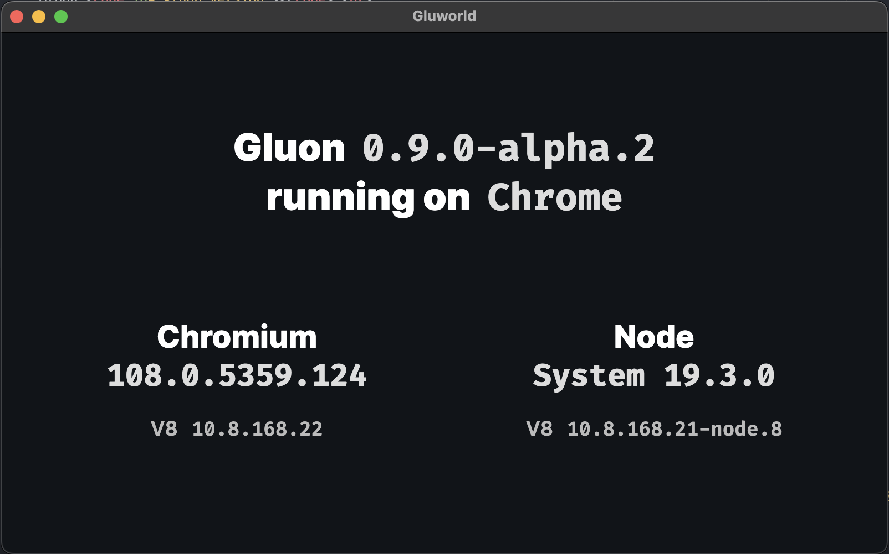

TIL: Packing web app as desktop app on Mac without Electron
gluon
Recently, I found gluon. It is a framework for building desktop applications using web technologies. Unlike Electron, it uses the System installed Chromium or Firefox instead of the bundled Chromium. This makes it possible to use the same version of Chromium or Firefox as the one used by the user’s browser. This also makes the application significantly smaller. At the time of this TIL, the gluon framework is only a few weeks old.
| Part | Gluon | Electron | Tauri | Neutralinojs |
|---|---|---|---|---|
| Frontend | System installed Chromium or Firefox | Self-contained Chromium | System installed webview | System installed webview |
| Backend | System installed or bundled Node.JS | Self-contained Node.JS | Native (Rust) | Native (Any) |
| IPC | Window object | Preload | Window object | Window object |
| Status | Early in development | Production ready | Usable | Usable |
| Ecosystem | Integrated | Distributed | Integrated | Integrated |
I played with the source code a bit. I’m creating a small app in JavaScript, able to run offline with database access. It should be fun to be able to build and package it as both Electron and Gluon apps?

How it works
It work by detecting the existing Chromium or Firefox installation, and call the corresponding binary with the --app flag. The --app flag is used to specify the URL of the application. It can be a local file or a remote URL.
const browserPaths = ({
win32: process.platform === 'win32' && {
chrome: join(process.env.PROGRAMFILES, 'Google', 'Chrome', 'Application', 'chrome.exe'),
chrome_canary: join(process.env.LOCALAPPDATA, 'Google', 'Chrome SxS', 'Application', 'chrome.exe'),
edge: join(process.env['PROGRAMFILES(x86)'], 'Microsoft', 'Edge', 'Application', 'msedge.exe'),
firefox: join(process.env.PROGRAMFILES, 'Mozilla Firefox', 'firefox.exe'),
firefox_nightly: join(process.env.PROGRAMFILES, 'Firefox Nightly', 'firefox.exe'),
},
linux: { // these should be in path so just use the name of the binary
chrome: [ 'chrome', 'google-chrome', 'chrome-browser', 'google-chrome-stable' ],
chrome_canary: [ 'chrome-canary', 'google-chrome-canary', 'google-chrome-unstable', 'chrome-unstable' ],
chromium: [ 'chromium', 'chromium-browser' ],
chromium_snapshot: [ 'chromium-snapshot', 'chromium-snapshot-bin' ],
firefox: 'firefox',
firefox_nightly: 'firefox-nightly'
},
darwin: {
chrome: '/Applications/Google Chrome.app/Contents/MacOS/Google Chrome',
edge: '/Applications/Microsoft Edge.app/Contents/MacOS/Microsoft Edge',
firefox: '/Applications/Firefox.app/Contents/MacOS/firefox',
}
})[process.platform];
Then I realize that I can do the same, by create a binary to call the installed browser engine and expose a port for communicating between Frontend and Backend. Sound similar? It is. It is the same as Tauri and Neutralinojs. But this time, use the user’s browse engine instead of webview.
Now I’m free to use my own Backend instead of sticking to NodeJS. And it’s definitely Go!
Electron and Nativefier
- Electron is a framework for building cross-platform desktop applications using web technologies. It’s too famous in developer community, no need to explain more.
- Nativefier is a tool to create a desktop app from a web app. It is a wrapper around Electron.
Both works by bundling Chromium and NodeJS. I won’t include Chromium in my app, but they will help me learn how to package my app for different platforms.
Manually packaging a web app as desktop app
Run a command as a MacOS application
Create this directory structure:
sample.app/
Contents/
MacOS/
APP
Info.plist
Make a simple Go application and put it inside the MacOS directory:
go build -o sample.com/MacOS/APP
And add Info.plist:
<?xml version="1.0" encoding="UTF-8"?>
<!DOCTYPE plist PUBLIC "-//Apple//DTD PLIST 1.0//EN" "http://www.apple.com/DTDs/PropertyList-1.0.dtd">
<plist version="1.0">
<dict>
<key>CFBundleDisplayName</key>
<string>APP</string>
<key>CFBundleExecutable</key>
<string>APP</string>
</dict>
</plist>
Now, we should be able to run the app by double-clicking the sample.app file. Or by command:
open sample.app
Add a web UI by calling Chrome
We can use the --app flag to open a web app in Chrome:
"/Applications/Google Chrome.app/Contents/MacOS/Google Chrome" --app=http://127.0.0.1:8080
The web app is open as a chrome window, pointing to http://127.0.0.1:8080. Add a webserver there to serve the UI.
Some other details
- Add
--user-data-dir=<path>to run Chrome as a separate instance. Without it, quitting Chrome will make our app exit and vice versa. - Add
--remote-debugging-portto allow remote debugging of the Chrome instance. Read more. - Add icon to the app by creating an
.icnsfile, put it insideResources, and addingCFBundleIconFiletoInfo.plist. Read more about iconutil and application bundle. - Sign the app with
codesignto be able to distribute the app. Sign up for Apple Developer and sign the app. - Without code signing, if you send the app to someone else machine (or upload and re-download the app), the app will be quarantined by MacOS. To run the app, you need to right-click and select “Open” from the context menu. Or you can disable the quarantine by running
xattr -d com.apple.quarantine <app>.
Author
I'm Oliver Nguyen. A software maker working mostly in Go and JavaScript. I enjoy learning and seeing a better version of myself each day. Occasionally spin off new open source projects. Share knowledge and thoughts during my journey. Connect with me on , , , and .